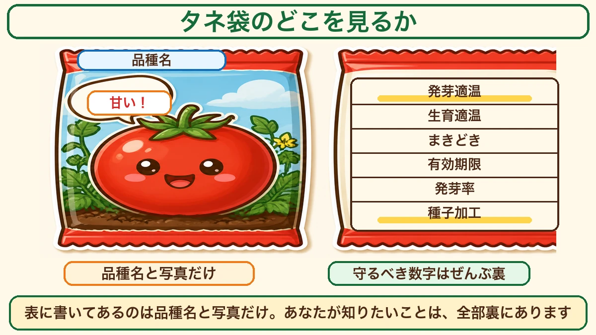
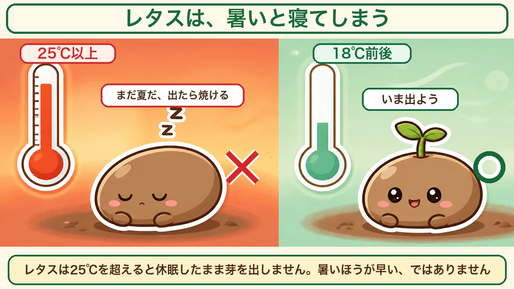
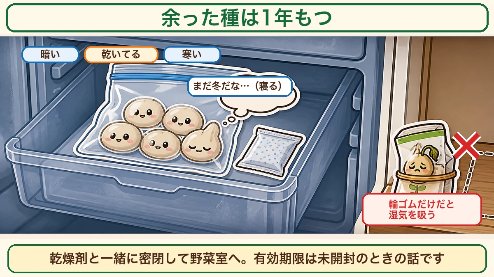
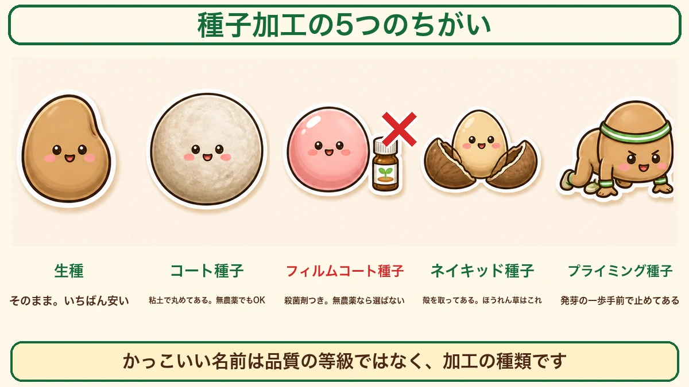

タネ袋は裏から読みます🌱 「フィルムコート」の意味、知っていますか
🗨️「タネ袋って、絵を見て選んでる」
🗨️「フィルムコートって、なんか良さそうな響き」
🗨️「去年の余った種、捨てたほうがいいのかな」
どうも、8150（えいこう）です🌱 家庭菜園歴8年、理科の教員免許を持っていて、有機・無農薬で野菜を育てています。
1月は、タネを買う月です。
畑の作業は少ないのに、ホームセンターにはもう春夏野菜のタネが並びはじめます。ここで何を選ぶかで、春からの半年が決まります。
でも、選び方を教わったことって、ないですよね。
先に、この記事でいちばん言いたいことを言っておきます。
★タネ袋は、裏から読んでください。
表に書いてあるのは、品種名と、おいしそうな写真だけです。あなたが知りたいことは、全部裏に書いてあります☺️

📖 この記事の目次
表には、ほとんど情報がない
表で分かるのは「何の野菜か」だけ
タネ袋の表には、だいたいこの3つが載っています。
- 野菜の名前と品種名
- 育った状態の写真
- キャッチコピー（「甘い」「作りやすい」など）
このうち、栽培に効いてくる情報はひとつもありません。
写真はいちばん出来のいい株を撮ったものですし、キャッチコピーはメーカーが自分で書いたものです。「作りやすい」と書いてあっても、それがあなたの畑で作りやすいかどうかは別の話です。
裏には、守るべき数字が並んでいる
裏を見てください。小さい字で、こんなことが書いてあります。
- 発芽適温
- 生育適温
- まきどき（地域別のカレンダー）
- 有効期限
- 発芽率
- 種子加工の表示
この6つが、そのタネの取扱説明書です。
私は最初の年、これを一度も読まずに育てていました。芽が出ないたびに「土が悪いのかな」「水が足りないのかな」と畑をいじっていたのですが、原因はまく時期が2か月ずれていただけでした。袋の裏に、ちゃんと書いてありました。
①発芽適温 ── いちばん大事な数字
「気温」ではなく「地温」の話
前回の記事でもお話ししましたが、大事なのでもう一度書きます。
★タネ袋の「発芽適温」は、気温ではなく地温です。
空気が20℃でも、土の中はまだ12℃ということがあります。土は水を含んでいるので、温まるのが遅いんです。タネがいるのは土の中なので、タネにとっての世界は12℃のほうです。
だから、暖かくなってきたのに芽が出ないときは、まだ土が冷たいのだと思ってください。
レタスは、暑いと寝てしまう
面白い例をひとつ。
レタスの発芽適温は20℃前後です。そして★25℃を超えると、タネは休眠したまま芽を出しません。
「暑いほうが早く出そう」と思いますよね。逆なんです。レタスにとって25℃以上は「まだ夏だ、出たら焼け死ぬ」という合図なので、タネのほうが待つことを選びます。
そして18℃前後まで下がると、ようやく起きてきます。

これは意地悪ではなくて、レタスがもともと涼しい土地の野菜だからです。野菜には出身地があって、タネはその記憶を持っています。
水は、いつもの倍の感覚で
発芽までのあいだ、水やりは★普段の倍の感覚でまいてください。
表面がうっすら乾いた時点で、タネのまわりはもう乾いています。人間の目には「まだ湿ってる」ように見えても、タネの側は干からびはじめている。芽が出ない原因の多くは、これです。
芽が出るまでは、乾かさない。出てからは、少しずつ減らす。この順番です。
②有効期限と発芽率 ── 期限は「未開封」の話
2つの数字はセットで見る
裏には、こう書いてあります。
- 有効期限：2027年◯月
- 発芽率：80％以上
この2つはセットです。「この期限までなら、80％以上は芽が出ますよ」という意味になります。
100％ではありません。10粒まいたら2粒は出ない。それが正常です。だから★タネは少し多めにまくのが前提になっています。
ただし、開けたら期限は関係なくなる
ここが落とし穴です。
★有効期限は、未開封のときの話です。
一度開けたタネ袋は、空気中の湿気を吸います。タネは乾いた状態で眠っているので、湿気が入ると呼吸が始まり、少しずつ体力を使っていきます。袋を輪ゴムで留めて棚に置いておくだけでは、期限まで持ちません。
余った種は、1年はもつ
では捨てるのかというと、そんなことはありません。
私の実感では、★1年は普通に使えます。去年の秋に余ったタネを、今年の秋にまいて、ちゃんと育ちました。発芽率は少し落ちるので、いつもより気持ち多めにまけば十分です。
保存のコツは3つです。
- お菓子に入っている乾燥剤を一緒に入れる
- 密閉する（チャック付きの袋か、フタつきの瓶）
- 冷蔵庫の野菜室に置く
暗くて、乾いていて、寒い。タネにとっては「まだ冬が続いている」状態なので、目を覚ましません。

葉物の残り種は、まとめて使い切れる
小松菜、水菜、春菊、ほうれん草。葉物のタネって、少しずつ余りますよね。
これらの発芽適温は、どれも15〜25℃くらいでほぼ同じです。★30℃を下回れば、だいたい発芽してくれます。
つまり、秋に葉物のタネをまとめてまいてしまえば、全部使い切れます。私は種類ごとに区画を分けてまいています。混ぜてまくと収穫のとき見分けがつかなくて、これは一度やって困りました。
③種子加工 ── ★ここがいちばん知られていない
聞き慣れない言葉は、全部「加工の種類」
タネ袋にこんな言葉を見たことはありませんか。
- コート種子
- フィルムコート種子
- ネイキッド種子
- プライミング種子
かっこいい響きなので、なんとなく「良さそう」と思って選んでしまいがちです。でもこれは品質の等級ではなく、★どんな加工をしたかを表しているだけです。
ひとつずつ見ていきます。

生種（きだね）── そのままのタネ
何も加工していない、裸のタネです。いちばん安く、いちばん自然です。
小さすぎて扱いにくい種類もありますが、基本はこれで問題ありません。
コート種子 ── 粘土で丸めてある
タネを★粘土で包んで、丸く大きくしたものです。
にんじんやねぎのタネはとても小さくて、指でつまむと落としてしまいます。丸く大きくしてあれば、1粒ずつ置いていける。まき間違いが減って、間引きの手間が減ります。
粘土なので、無農薬でも問題ありません。
★フィルムコート種子 ── 殺菌剤がまぶしてある
ここが今日いちばんお伝えしたいところです。
「フィルム」「コート」と聞くと、きれいに膜がかかった高級品のように思えます。私も最初はそう思っていました。
違います。
★フィルムコート種子とは、殺菌剤をまぶしてあるという意味です。
タネの表面についた病原菌を殺して、まいた直後に腐るのを防ぐための加工です。農業としては合理的なやり方ですし、危険なものではありません。
ただ、★無農薬でやると決めているなら、これは選ばないほうがいい。
畑には農薬を1滴も入れていないのに、スタート地点のタネに薬がついている。それでは筋が通りません。袋の裏に「フィルムコート」「消毒済み」「種子消毒」と書いてあったら、別のものを探してください。
ネイキッド種子 ── ★ほうれん草はこれを選ぶ
ほうれん草のタネには、かたい殻がついています。この殻が水を通しにくいので、ほうれん草は発芽が揃いにくい野菜です。
ネイキッド種子は、その★殻を取り除いてあるタネです。裸、という意味ですね。
殻がないぶん水がすぐ入るので、発芽が早く、そろいます。ほうれん草で苦労した経験があるなら、これを試してみてください。私はこれに変えてから、ほうれん草の「まばらに生える」問題がほとんどなくなりました。
プライミング種子 ── 発芽の一歩手前で止めてある
いちばん手のこんだ加工です。
タネにあらかじめ水を吸わせて、★発芽する直前の状態まで進めてから、乾かして止めてあるもの。走り出す構えを取ったまま、静止しているようなイメージです。
まくとすぐ動き出すので、発芽が早く、そろいます。そのぶん値段は上がりますし、長期保存には向きません。買ったシーズンに使い切る前提のタネです。
じゃあ、何を買えばいいのか
私の選び方
迷ったら、この順でいいと思います。
- 基本は生種でいい（安いし、いちばん自然）
- タネが小さくて扱いにくいものはコート種子（にんじん・ねぎ）
- ほうれん草だけはネイキッド種子
- 「フィルムコート」「消毒済み」は、無農薬なら避ける
- プライミングは、どうしても揃えたいときの選択肢
固定種とF1、どちらでもいい
もうひとつよく聞かれるのが、固定種とF1です。
- 固定種：昔からある品種。自分でタネを採って、来年もまける
- F1：かけ合わせて作った一代限りの品種。育ちが揃って、病気に強いものが多い
どちらが正しいということはありません。タネを自分で採ってつないでいきたいなら固定種、まずは失敗を減らしたいならF1。目的が違うだけです。
私は両方使っています。かぶや小松菜は固定種でタネを採り、トマトやきゅうりはF1を買っています。
今日から、袋を裏返してみる
タネ袋の裏を読めるようになると、ホームセンターの棚がぜんぜん違って見えます。
「これは殺菌剤つきだから外そう」
「発芽適温20℃か、じゃあ3月末だな」
「有効期限が来年の春？ 今年使い切ろう」
こういう判断が、その場でできるようになります。
この記事の要点
- ★タネ袋は裏から読む。表には品種名と写真しかない
- 裏の6項目＝発芽適温／生育適温／まきどき／有効期限／発芽率／加工表示
- ★発芽適温は気温ではなく地温。レタスは25℃以上だと寝たまま
- 水やりは発芽まで★いつもの倍の感覚で
- 有効期限は★未開封の話。開けたら乾燥剤＋密閉＋野菜室へ
- ★余ったタネは1年はもつ。葉物はまとめてまき切れる
- ★フィルムコート種子＝殺菌剤つき。無農薬なら選ばない
- コート種子は粘土なので問題なし。★ほうれん草はネイキッド種子
全部やろうとしなくて大丈夫です。まずは家にあるタネ袋を1つ、裏返してみてください。発芽適温の数字が見つかったら、それが第一歩です🌱
次回は、2月の作業の話。冬のあいだにやっておくと春が楽になることを、月ごとにまとめてお話しします🌱
ここまで読んでくださって、ありがとうございました。
レタスのタネ
この記事に出てくる「25℃以上だと休眠する」を、実際に確かめられるタネです。夏にまくと出てきません。18℃前後まで下がると、待っていたように芽を出します。タネ袋の裏の発芽適温を見比べてみてください。
![[商品価格に関しましては、リンクが作成された時点と現時点で情報が変更されている場合がございます。]](https://hbb.afl.rakuten.co.jp/hgb/56d217e1.4eab06f8.56d217e2.1513a8ec/?me_id=1204270&item_id=10000397&pc=https%3A%2F%2Fthumbnail.image.rakuten.co.jp%2F%400_mall%2Fnikkoseed%2Fcabinet%2Fgoq002%2F6479_1.jpg%3F_ex%3D240x240&s=240x240&t=picttext "[商品価格に関しましては、リンクが作成された時点と現時点で情報が変更されている場合がございます。]")

ほうれん草のタネ
ほうれん草はかたい殻に守られていて、発芽が揃いにくい野菜です。もし苦労した経験があるなら、袋の裏に「ネイキッド」と書いてあるものを探してみてください。殻を取ってあるぶん水がすぐ入ります。
![[商品価格に関しましては、リンクが作成された時点と現時点で情報が変更されている場合がございます。]](https://hbb.afl.rakuten.co.jp/hgb/56d218b8.a80573a6.56d218b9.1d398fba/?me_id=1241438&item_id=10032053&pc=https%3A%2F%2Fthumbnail.image.rakuten.co.jp%2F%400_mall%2Fnogyoya%2Fcabinet%2Fcube7%2F2246239_2.jpg%3F_ex%3D240x240&s=240x240&t=picttext "[商品価格に関しましては、リンクが作成された時点と現時点で情報が変更されている場合がございます。]")
小松菜のタネ（固定種）
いちばん失敗しにくい野菜です。そして固定種なので、自分でタネを採って来年もまけます。買ったタネを1年で使い切る前提のF1とは、そこが違います。どちらが正しいということはなく、目的が違うだけです。
![[商品価格に関しましては、リンクが作成された時点と現時点で情報が変更されている場合がございます。]](https://hbb.afl.rakuten.co.jp/hgb/56e76943.db126f41.56e76944.bd847f20/?me_id=1270580&item_id=10012154&pc=https%3A%2F%2Fthumbnail.image.rakuten.co.jp%2F%400_mall%2Ftekutekushop%2Fcabinet%2Fseed%2Fhn063.jpg%3F_ex%3D240x240&s=240x240&t=picttext "[商品価格に関しましては、リンクが作成された時点と現時点で情報が変更されている場合がございます。]")
乾燥剤（シリカゲル）
有効期限は未開封のときの話です。一度開けた袋は湿気を吸って、タネが少しずつ体力を使っていきます。乾燥剤を一緒に入れておけば、開けたあとでも1年は普通に使えます。
![[商品価格に関しましては、リンクが作成された時点と現時点で情報が変更されている場合がございます。]](https://hbb.afl.rakuten.co.jp/hgb/56eb9618.3f325504.56eb9619.e861bcb7/?me_id=1358935&item_id=10000079&pc=https%3A%2F%2Fthumbnail.image.rakuten.co.jp%2F%400_mall%2Fhw-enable%2Fcabinet%2Fsilicagel%2Ffujigel%2F10gn.jpg%3F_ex%3D240x240&s=240x240&t=picttext "[商品価格に関しましては、リンクが作成された時点と現時点で情報が変更されている場合がございます。]")
チャック付き保存袋
乾燥剤と一緒に、これに入れて冷蔵庫の野菜室へ。暗くて、乾いていて、寒い。タネにとっては「まだ冬が続いている」状態なので、目を覚ましません。輪ゴムで留めただけの袋は、湿気を吸います。
![[商品価格に関しましては、リンクが作成された時点と現時点で情報が変更されている場合がございます。]](https://hbb.afl.rakuten.co.jp/hgb/56eb9768.493f3421.56eb9769.0365e053/?me_id=1228244&item_id=10000759&pc=https%3A%2F%2Fthumbnail.image.rakuten.co.jp%2F%400_mall%2Fluxfort%2Fcabinet%2Fgtg2%2Fxp-13_w.jpg%3F_ex%3D240x240&s=240x240&t=picttext "[商品価格に関しましては、リンクが作成された時点と現時点で情報が変更されている場合がございます。]")
あわせて読みたい